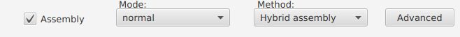

Assembly Settings¶
Mode [1] (Required)¶
Choose an assembly mode.
Note
- Conservative: Conservative mode is least likely to produce a complete assembly but has a very low risk of misassembly.
- Normal: Normal mode is intermediate regarding both completeness and misassembly risk.
- Bold: Bold mode is most likely to produce a complete assembly but carries greater risk of misassembly.
- Default: Normal.
Method [1] (Required)¶
Choose an assembly method.
Note
- Long-read-only assembly: Long-read-only assembly using only long reads.
- Hybrid assembly: Hybrid assembly using both Illumina reads and long reads.
- Default: Hybrid assembly.
VCF [1] (Optional)¶
Produce a VCF by mapping the short reads to the final assembly if selected.
Note
- Default: not selected.
Trimmomatic settings [2]¶
Trim Illumina reads when it is necessary.
Note
- Illumina reads will be trimmed in “Assembly” step only when all the following two conditions are satisfied:
- Hybrid assembly;
- Illumina reads filename contains no “HQ”.
- Remove Illumina adapters provided in the NexteraPE-PE.fa file (provided). Initially Trimmomatic will look for seed matches (16 bases) allowing maximally 2 mismatches. These seeds will be extended and clipped if in the case of paired end reads a score of 30 is reached (about 50 bases), or in the case of single ended reads a score of 10, (about 17 bases).
- Remove leading low quality or N bases (below quality 3)
- Remove trailing low quality or N bases (below quality 3)
- Scan the read with a 4-base wide sliding window, cutting when the average quality per base drops below 15
- Drop reads which are less than 40 bases long after these steps
| [1] | (1, 2, 3) Unicycler https://github.com/rrwick/Unicycler |
| [2] | Trimmomatic http://www.usadellab.org/cms/?page=trimmomatic |